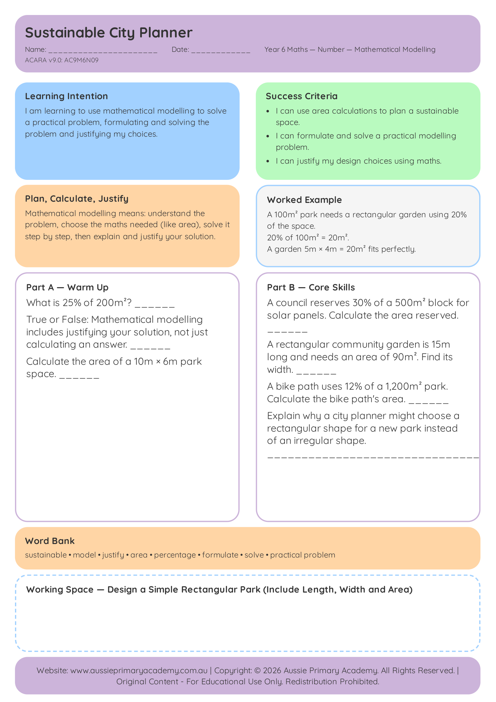

Year 6 · Maths · Free Printable
Sustainable City Planner
Apply mathematical reasoning and problem-solving skills in a sustainable city design challenge.
Worksheet Preview

Learning Intention
Students apply mathematical reasoning to plan, compare and make decisions in a real-world design challenge.
Australian Curriculum
Supports Year 6 Maths learning. (AC9M6N09)
Teacher Notes
This is a rich task — allow extra time for discussion and justification of decisions.
Skills Practised
- Mathematical reasoning
- Problem-solving
- Applied decision-making
What Students Will Practise
- Using number skills in a real-world planning context
- Comparing options and justifying choices with mathematics
- Working with budgets, quantities or constraints
- Explaining mathematical reasoning clearly
How to Use This Worksheet
- Classwork: Rich task for extended problem-solving and discussion.
- Homework: Independent planning and justification practice.
- Revision: Application of number and reasoning skills in context.
- Small-group support: Talk through decisions and model clear mathematical justification.
Related Year 6 Maths Resources
Continue practising Year 6 number and measurement skills.
- Year 6 · Maths
Probability
Probability Scales
Describe and compare the likelihood of events using probability scales.
View Worksheet - Year 6 · Maths
Time
Timetables and Duration
Read timetables and calculate duration in real-life contexts.
View Worksheet - Year 6 · Maths